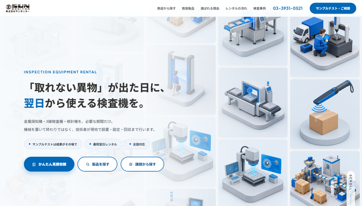
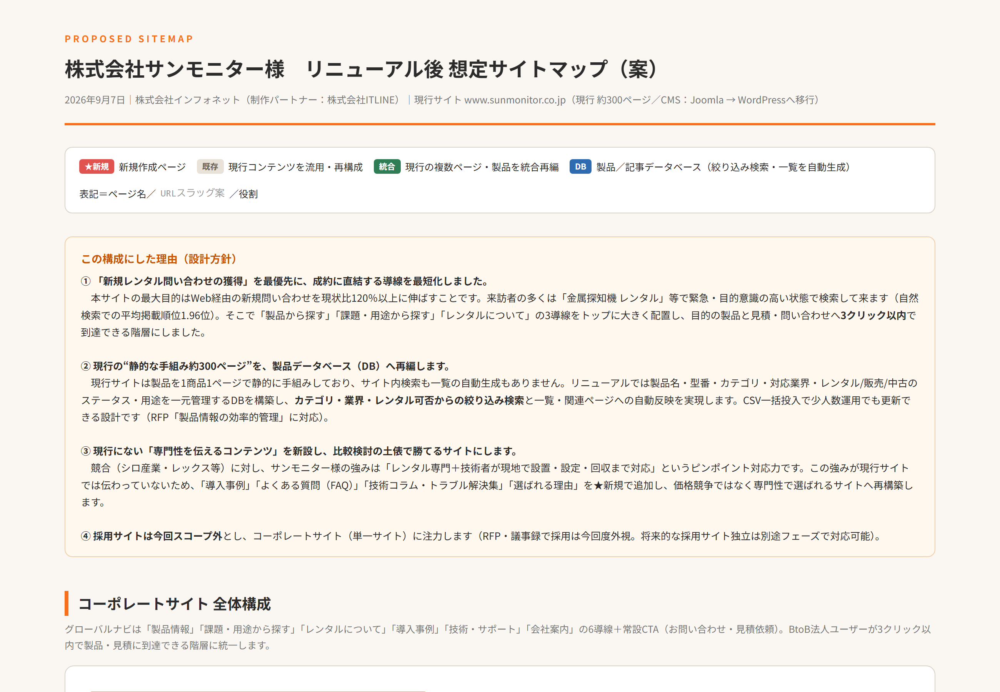
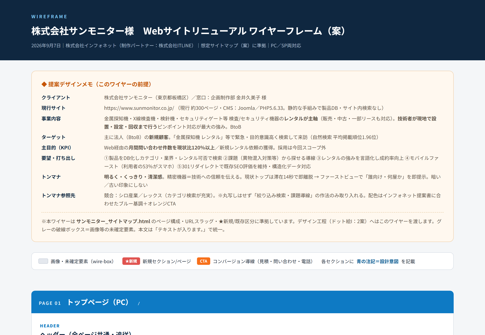

株式会社インフォネット（制作パートナー：株式会社ITLINE）｜2026年9月7日（2026年9月12日 改訂：デザイン案Aを追加／ナビ上部化・MVの動き強化・FV3ボタン追加）
リニューアルのご提案本編。提案サマリー／与件整理／現状分析（アクセス分析・セキュリティ診断）／全体戦略（問い合わせ120%）／想定サイトマップ／デザイン2案／CMS選定理由（WordPress）／SEO・AIO方針／運用サポート／実施体制／スケジュール／類似実績／会社概要。※金額は別紙御見積書に記載
公開後の運用サポートを1冊にまとめた資料。窓口のご案内／運用範囲と保守範囲／製品情報・お知らせの更新手順／ヘルプデスク（電話・メール・更新依頼ダッシュボード）／定期アップデート保守（月2回）／セキュリティ対策／更新代行／年間カレンダー／実施体制。
少人数体制でも主体的に進行できる進め方。全体スケジュール（ガント）／工程別の進捗表／進捗ダッシュボードの画面と使い方／現行サイト（Joomla）からの移行計画（データの抽出・受け渡しは弊社と制作パートナーの間で完結）／301リダイレクト設計。
会社としての体制をお伝えする資料。WordPressセキュリティ対策／KPI達成の運用サポート／アクセス解析ツール／プロジェクト実施体制図／会社概要（ISO27001・ISO27017）／製造業・事業会社・公共団体の構築実績。
ご連絡手段（メール・お電話・更新依頼ダッシュボード）の一覧と受付・ご返答の目安／更新依頼ダッシュボードの操作3ステップ／更新代行のご依頼フローと作業枠を超えた場合の費用／WordPressで製品情報・お知らせを掲載する手順（管理画面の図解つき）。
※ 進捗ダッシュボード／更新依頼ダッシュボードの動く画面イメージは、10月2日提出版でこの位置に掲載します（サンプルデータ・PC/スマホ対応）。
※ 御見積書は別途ご提示いたします。
※ 御提案書は「ご提案内容」、追加資料は「会社としての体制・セキュリティ・実績」と役割を分けて構成します。

「取れない異物が出た日に、翌日から使える検査機を」をファーストビューに置き、用途（食品工場／イベント・警備／アパレル）から製品にたどり着く導線を主軸にした案。メインビジュアルは正方形タイルのモザイクを全画面で見せ、列ごとに上下へ流れ続ける動きとミニチュア立体イラストのループ動画を組み合わせています。ファーストビューにかんたん見積依頼／製品を探す／課題から探すの3導線を配置（ワイヤーPAGE01準拠）。グローバルナビは上部固定。配色は現行サイトから採ったサンモニターブルー。PC・スマホ対応。
精密機器を扱う「業界のリーディングカンパニー」としての信頼感を打ち出す刷新案。高品質な製品・検査シーンのビジュアルを全面に、課題（異物混入対策・手荷物検査）から製品を探す導線とサンプルテスト・問い合わせCTAを強調。PC・スマホ対応。

現行約300ページを整理・統廃合し、法人のお客様が3クリック以内で目的の情報へ到達できる構成。製品情報はデータベース化（型番・用途・業界・レンタル/販売ステータス）、「課題・用途から探す」「レンタルについて」「導入事例」「FAQ」「技術・サポート」を★新規で追加。「この構成にした理由（設計方針）」と末尾にページ一覧表（固定27P＋製品DB）を掲載。

サイトマップを土台に、主要5画面の構成と要素の意図を注記した設計図。トップ（PC／スマートフォン・モバイルファースト）／製品一覧・絞り込み検索／製品詳細／レンタルについて（成約率向上ページ）／お問い合わせ・見積依頼・資料請求。デザイン案A/Bはこのワイヤーを基に制作します。
| 提案依頼書のご要件 | 対応資料 |
|---|---|
| 提案資料 | 御提案書（10月2日提出版） |
| デザイン案（PC・スマホ） | ✔ デザイン案A（動くHTML・先行公開）／案B・Cは10月2日提出版 |
| サイトマップ | ✔ 想定サイトマップ（HTML・先行公開）＋主要ページのワイヤーフレーム |
| CMS選定理由 | 御提案書「CMS選定理由（WordPress）・製品データベース」（10月2日提出版） |
| SEO方針 | 御提案書「SEO・AIO方針（構造化データ／301リダイレクト／既存評価の維持）」（10月2日提出版） |
| プロジェクト体制 | 御提案書「実施体制」＋追加資料「実施体制図」（10月2日提出版） |
| スケジュール | 御提案書「スケジュール（2027年5月公開）」＋進め方ガイド（10月2日提出版） |
| 見積書（詳細内訳） | 別途ご提示（全項目明細） |
| 保守・運用プラン | 運用・サポート体制のご説明＋ご連絡方法と更新代行のご案内（10月2日提出版） |
| 類似実績 | 御提案書「類似実績」＋追加資料「構築実績」（10月2日提出版） |